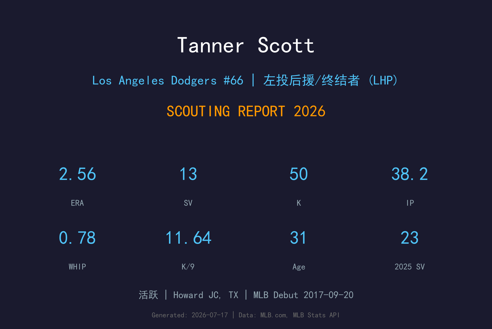
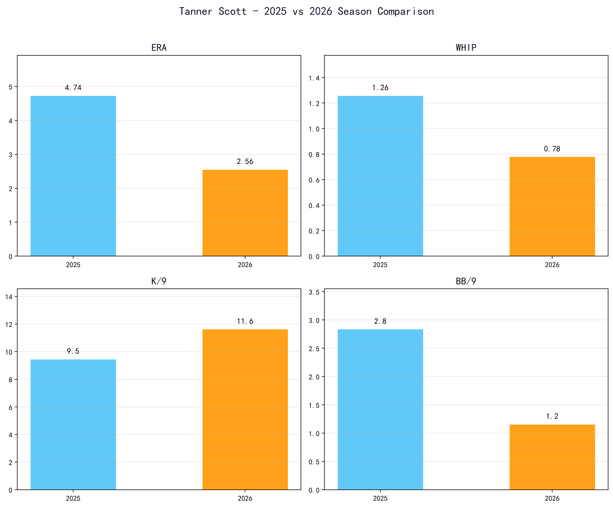
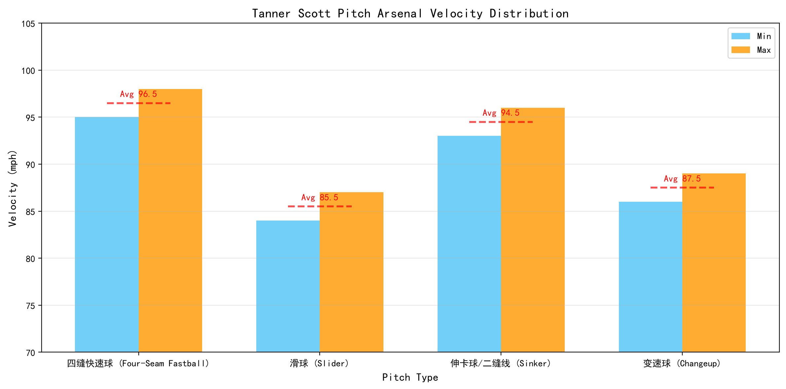
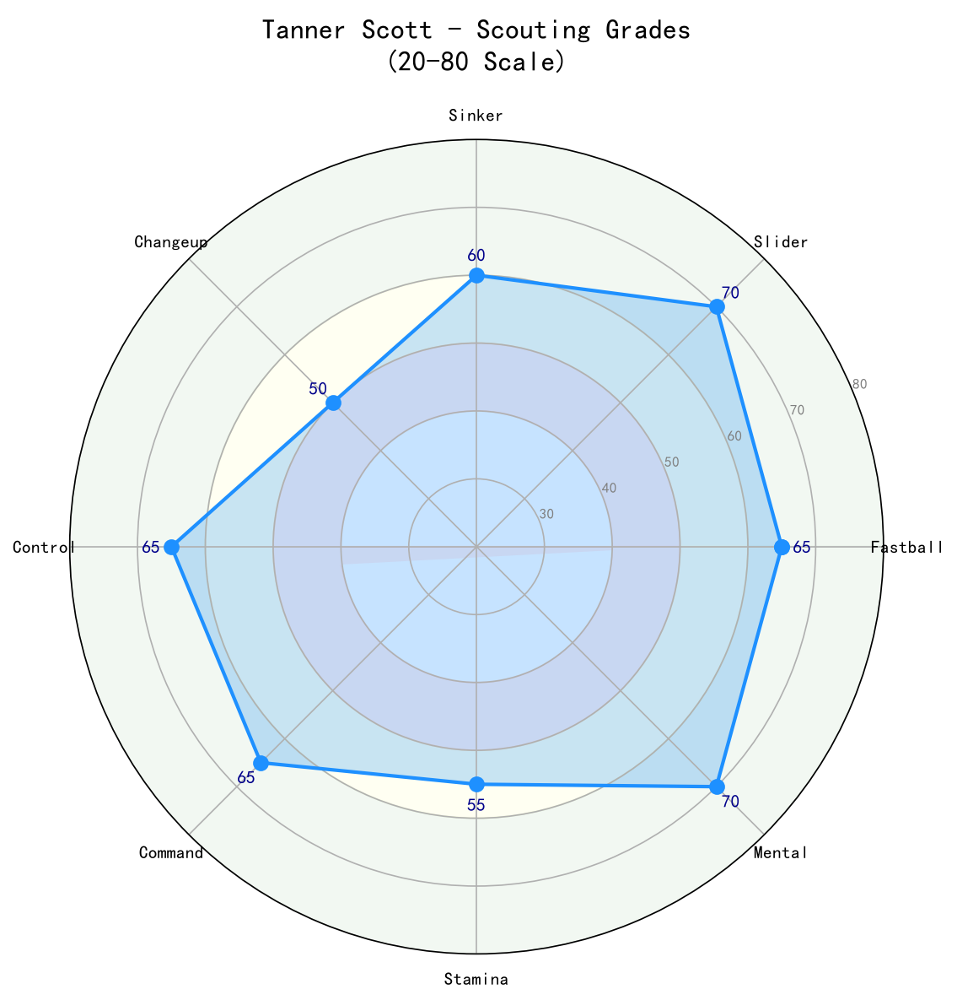

Los Angeles Dodgers #66 | 左投后援/终结者 (LHP) | 活跃

Tanner Scott 是道奇牛棚中最重要的左投后援/终结者之一，以高侧投机制、锐利滑球和出色控球著称。2024年首次入选全明星，2025年在道奇拿下23次救援成功，2026年更将ERA压至2.56、WHIP降至0.78的 elite 水准。
作为一名30岁后的后援投手，Scott 的价值不仅在于救援成功次数，更在于他能在高压局面中稳定出局。他与 Evan Phillips 是长期好友，两人从金莺时代起就并肩作战，这份默契也延续到道奇牛棚。
2026年他的K/9 高达11.64、BB/9 仅1.16，显示他已经从2025年的4.74 ERA 大幅反弹，进入职业生涯最稳定的时期。
2014年金莺第6轮（总第181顺位）选中，2017年9月20日登上大联盟。早期作为左投后援在金莺农场和牛棚中逐步成长。
在马林鱼缴出9胜5败、2.31 ERA、78.0 IP、104 K、0.99 WHIP 的生涯年。成为马林鱼队史首位单季100K的左投后援，并获选国联九月最佳后援投手。
在迈阿密马林鱼入选生涯首次全明星，前段赛季1.18 ERA、18次救援成功。7月30日被交易至圣地亚哥教士，并在季后赛对道奇出赛4.1局无失分。
加盟道奇首个赛季拿下生涯新高23次救援成功（国联第6），包括4月5日对费城人用3球完成三出局救援，成为史上第五位达成此成就的投手。世界大赛第3战对蓝鸟中继登板，0.2局无失分（官方记录），协助道奇在延长赛守成。
41场出赛、13次救援成功、ERA 2.56、WHIP 0.78、K/9 11.64、BB/9 1.16。从2025年的4.74 ERA 强势反弹，成为道奇最可靠的终结者人选。

📈 上图为近三年核心数据趋势。柱状图高度代表该年度表现，便于快速比较球员状态的上升或下滑。
| 赛季 | G | GS | W-L | ERA | IP | K | BB | WHIP | K/9 |
|---|---|---|---|---|---|---|---|---|---|
| 2025 | 61 | 0 | 1-4 | 4.74 | 57.0 | 60 | 18 | 1.26 | 9.47 |
| 2026 | 41 | 0 | 1-3 | 2.56 | 38.2 | 50 | 5 | 0.78 | 11.64 |

⚾ 上图为各球种球速区间（蓝=最低球速，橙=最高球速，红线=平均值）。球速差与位移差越大，打者越难锁定单一球路。
95-98 mph
Scott 的压制核心。虽然身材不高，但出手点高、球速出色，能在好球带边缘制造大量挥空。2026年打者对他的快速球 xBA 极低。
84-87 mph
主要出局球，sharp lateral break，对右打者外角和左打者内角都极具威胁。是他两好球后最信赖的追打球。
93-96 mph
非主要武器，偶尔用来制造地面球。Scott 在 2026 年的球路主轴仍是四缝快速球与滑球，伸卡球与变速球仅作为变奏。
86-89 mph
使用频率极低，偶尔用来对付左打者。Scott 绝大多数出局依靠四缝+滑球，变速球更多是“出其不意”的第三选择。
Scott 采用高侧投/three-quarter 出手点，出手点高且释放稳定。6'0"的身材在投手丘上并不显眼，但他的球速和球路分离度让他在后援投手中脱颖而出。他的投球动作简洁、重复性高，这使他在连续出赛时仍能保持控球。
2025年ERA 4.74、WHIP 1.26 显示他那一年的控球和球路被击中都出了问题。2026年他强势反弹，ERA 2.56、WHIP 0.78，K/9 从9.47 提升至11.64，BB/9 从2.84 降至1.16。这说明他重新找回了好球带边缘的 控球精准度，并且更有效地使用滑球来结束打席。
Scott 具备终结者所需的心理素质和球路组合。他的快速球-滑球 组合 是他 2026 年 90% 以上出局的核心武器；伸卡球与变速球仅作为辅助，能在九局下连续制造三振。2026年救援成功13次且ERA低于2.60，显示他已经可以承担第九局重任。
2025年他曾因左肘发炎进入IL，并在季后赛前因下肢脓肿手术被移出NLDS名单。2026年能稳定出赛41场，是健康管理的正面讯号。但鉴于他的后援使用强度和过往伤病，道奇仍需谨慎安排背靠背出赛。

2026年反弹后，Scott 已是道奇牛棚最可靠的终结者之一。只要保持健康，他能持续在高压局面中提供 elite 出局能力。
A- 级 / 精英后援/终结者
Tanner Scott 正在享受职业生涯最稳定的阶段。31岁的他结合经验、球路组合和道奇教练团的资源，有望在未来2-3年继续担任球队终结者或 布局（setup）man。他的快速球和滑球 组合 在季后赛中尤其有价值。
2026（下半季）：继续担任道奇主要终结者，ERA有望维持在2.50以下，全季救援成功25+次。
2027-2028：保持 elite 布局/终结者 角色，每年60-65场出赛，ERA 2.50-3.00。
2029+：随着年龄增长，可能逐渐转为专门对付左打或 eighth-inning 布局（setup）man，但控球和滑球仍具价值。
Tanner Alexander Scott 出生于美国俄亥俄州沃伦（Warren）。他在 Howland High School 就读时就是多项运动的明星，不仅打棒球，还参与橄榄球。高中毕业后，他先在 Notre Dame College 就读一年（该校于2024年关闭），随后转学到德州 Howard College。
2014年，Scott 在选秀第6轮（总第181顺位）被巴尔的摩金莺选中。他与日后也成为道奇后援的 Evan Phillips 在金莺牛棚共事多年，两人关系深厚，甚至 Phillips 结婚时 Scott 是他的伴郎。这段经历也让两人2025年在道奇重逢时迅速形成默契。
Scott 在2017年登上大联盟，早期经历起伏，但在马林鱼时期（2023-2024）打出 生涯年，2024年首次入选全明星。2025年他加盟洛杉矶道奇，成为球队后援核心。他与妻子 Maddie 育有一子 Beau。
场外，Scott 是 Cleveland Cavaliers、Browns 和 New England Patriots 的球迷。他喜欢高尔夫、电子游戏和弹吉他。他以冷静和专注著称，深受道奇教练团和队友信任。